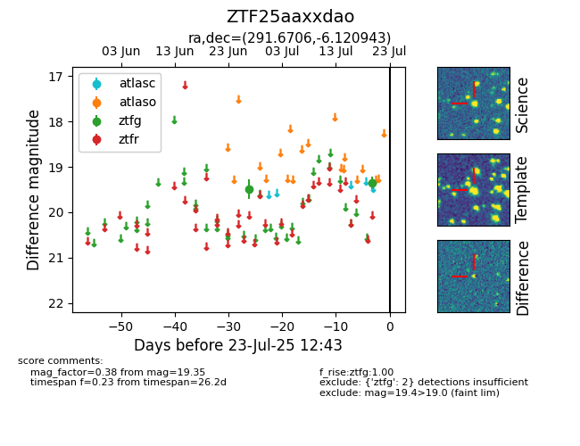

Target ZTF25aaxxdao at 2025-07-23 12:43, see:
FINK: fink-portal.org/ZTF25aaxxdao
Lasair: lasair-ztf.lsst.ac.uk/objects/ZTF25aaxxdao
ALeRCE: alerce.online/object/ZTF25aaxxdao
alt names
ZTF25aaxxdao (ztf,fink)
coordinates:
equatorial (ra, dec) = (291.6706,-6.12094)
galactic (l, b) = (31.4483,-10.61275)
photometry
last ztfg=19.35
2 ztfg detections
